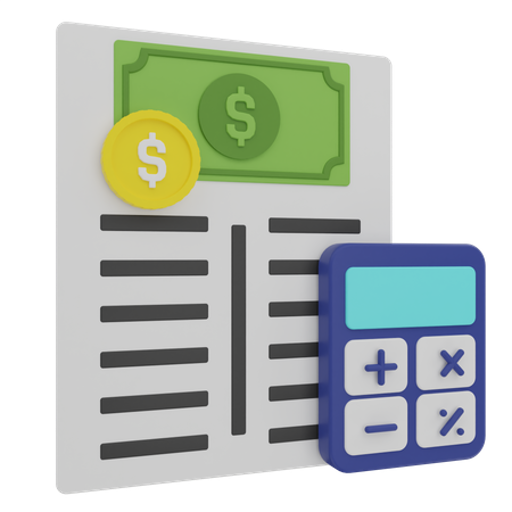

Hoe start je het bedrijf?
Controle of je voldoet aan de regels
Je bedrijf moet voldoen aan bepaalde regels voordat je het mag inschrijven. Dit zijn regels
zoals het niet mogen hebben van een naam met verkeerde indruk, merknamen van andere bedrijven,
en speciale tekens in de naam.
Naast een naam moet je kijken onder wat voor een rechtsvorm je valt. Een rechtsvorm is het type bedrijf dat je hebt, bijvoorbeeld een eenmanszaak, vof of bv. Op de website van de kamer van koophandel vind je alle informatie.
Naast een naam moet je kijken onder wat voor een rechtsvorm je valt. Een rechtsvorm is het type bedrijf dat je hebt, bijvoorbeeld een eenmanszaak, vof of bv. Op de website van de kamer van koophandel vind je alle informatie.
Onderzoek doen
Zoals hierboven al stond is het kijken of je naam voldoet aan de eisen en je rechtvorm ook erg
belangrijk. Alleen om hiernaar te kunnen kijken moet je onderzoek doen. Denk bijvoorbeeld aan
het brainstormen over een naam en het controleren van deze naam. Bestaat hij al of valt hij
buiten de gevraagde eisen?
Ook moet je kijken naar wat je allemaal nodig hebt om jouw doel te kunnen bereiken, dit kan je uitschrijven in een document of dergelijke.
Ook moet je kijken naar wat je allemaal nodig hebt om jouw doel te kunnen bereiken, dit kan je uitschrijven in een document of dergelijke.

Geld gespaard hebben
Het sparen van geld voor je bedrijf is erg handig, zo kan je in het begin investeringen doen wat
de opstart van jouw bedrijf makkelijker laat verlopen. Voor de inschrijving van je bedrijf
betaal je zoiezo al €51,95, daarnaast kan je ook een uitreksel kopen (bewijs van de bedrijfs
eigenaar) van een prijs tussen de €5 en €20.
Ook het nemen van een verzekering zoals aansprakelijkheids verzekering is erg handig, dit kost vaak €56 in de maand. Ook een boekhouder voor het bijhouden van je geldzaken is erg handig, maar wel duur, denk hier over na en zoek eventuele sponsoren.
Ook het nemen van een verzekering zoals aansprakelijkheids verzekering is erg handig, dit kost vaak €56 in de maand. Ook een boekhouder voor het bijhouden van je geldzaken is erg handig, maar wel duur, denk hier over na en zoek eventuele sponsoren.
Bedrijf inschrijven
het officieel inschrijven van je bedrijf is erg gemakkelijk. Je gaat naar de kvk.nl
website om je in te schrijven. Vervolgens moet je een redelijke lijst met vragen in vullen. Dit
zijn vragen over je contact gegevens, ondernemingsplan, naam, categorie en etc. Na het gemaakt
hebben van deze afspraak kom je op bezoek op het kantoor van de gekozen KVK locatie.
Op het kantoor zal een medewerker dan nog 1x alle gegevens doornemen en zal het bedrijf openen, factuur uitprinten en jou je kvk te laten betalen.
Op het kantoor zal een medewerker dan nog 1x alle gegevens doornemen en zal het bedrijf openen, factuur uitprinten en jou je kvk te laten betalen.

Eventuele extra rekening openen
Het openen van een zakelijke rekening kan ook erg handig zijn, maar kost wel een beetje geld. Je
kan zo'n rekening gebruiken om je privé en bedrijfs geld apart te houden, zo kan je beter zien
wat je uitgeeft voor je bedrijf of verdient en dit scheelt werk met de boekhouding.
Ook kan je op zo'n rekening je boekhouder toegang geven om te zien wat je binnenkrijgt of uitgeeft, zo hoef je niet elke week door te geven wat je hebt uitgegeven of verdient, en bespaar je geld en tijd.
Ook kan je op zo'n rekening je boekhouder toegang geven om te zien wat je binnenkrijgt of uitgeeft, zo hoef je niet elke week door te geven wat je hebt uitgegeven of verdient, en bespaar je geld en tijd.
Gegevens ontvangen
Nadat je bedrijf geopend is ontvang je een paar gegevens. Dit zijn gegevens zoals je KVK-nummer,
BTW-id en OB-nummer. Je KVK-nummer zit gekoppeld aan je bedrijf, dit nummer moet openbaar op
sociale media en dergelijke staan zodat mensen je bedrijf kunnen opzoeken. Je BTW-id is voor de
belasting dienst, hiermee kan jij je toeslagen in dienen van je verdiende geld inclusief
BTW.
Je omzetbelastingnummer (voorheen het btw-nummer) gebruik je bij contact met de Belastingdienst. Bijvoorbeeld als je een brief schrijft, de BelastingTelefoon belt of bij btw-aangiftes. Een omzetbelastingnummer ziet er zo uit: de 9 cijfers van je BSN, letter B, 2 cijfers
Je omzetbelastingnummer (voorheen het btw-nummer) gebruik je bij contact met de Belastingdienst. Bijvoorbeeld als je een brief schrijft, de BelastingTelefoon belt of bij btw-aangiftes. Een omzetbelastingnummer ziet er zo uit: de 9 cijfers van je BSN, letter B, 2 cijfers